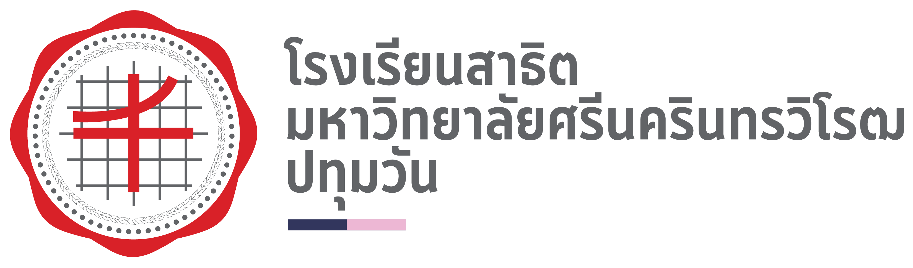
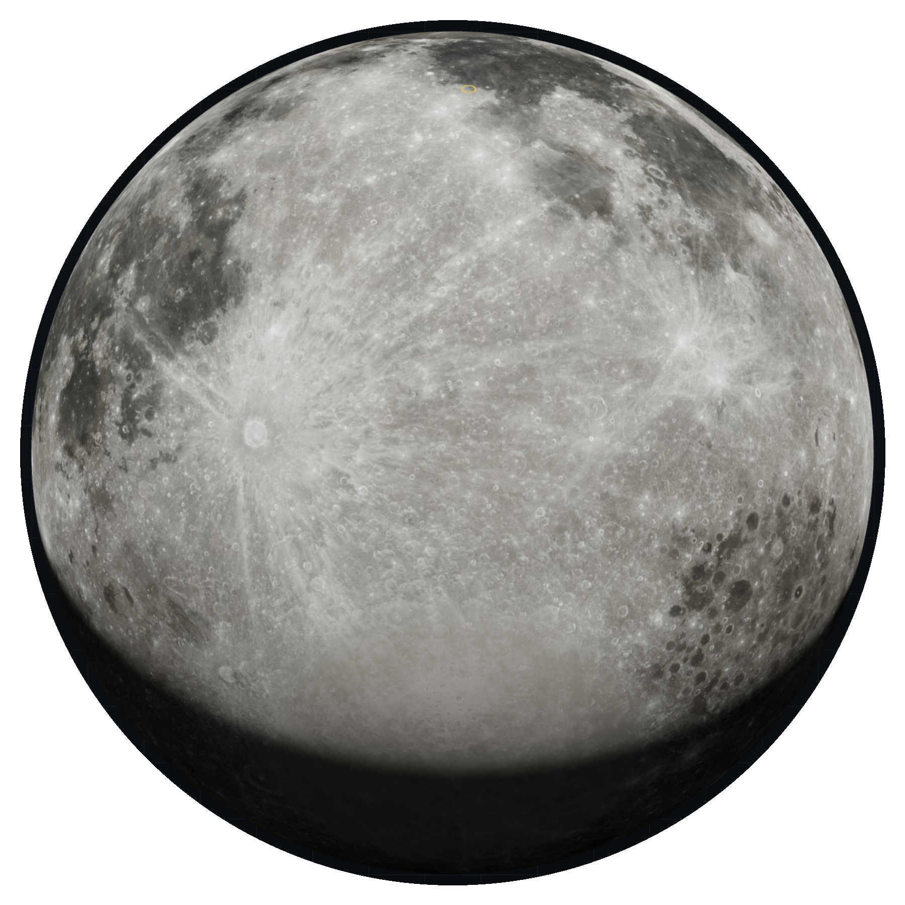
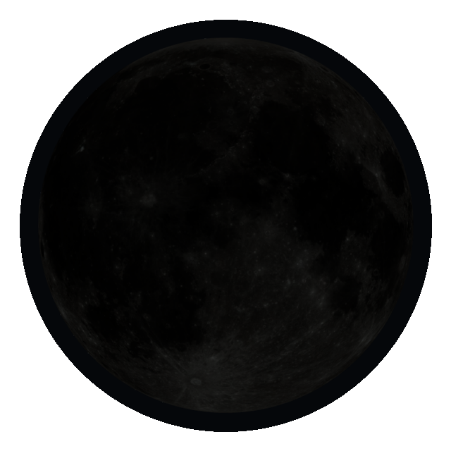
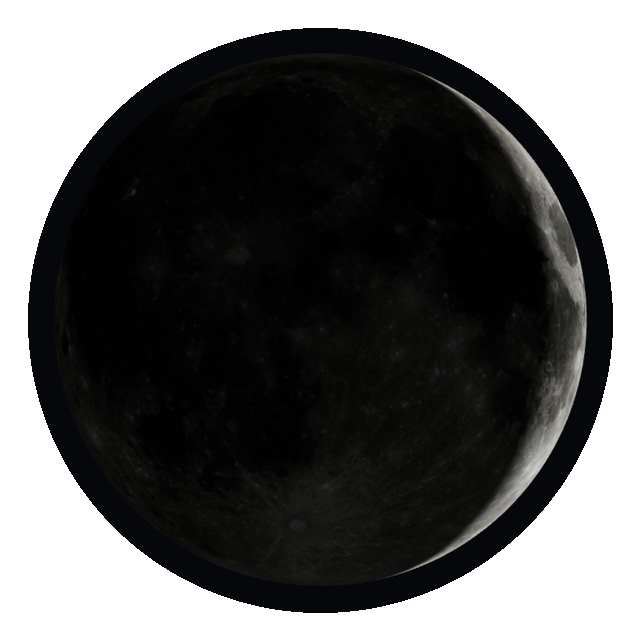
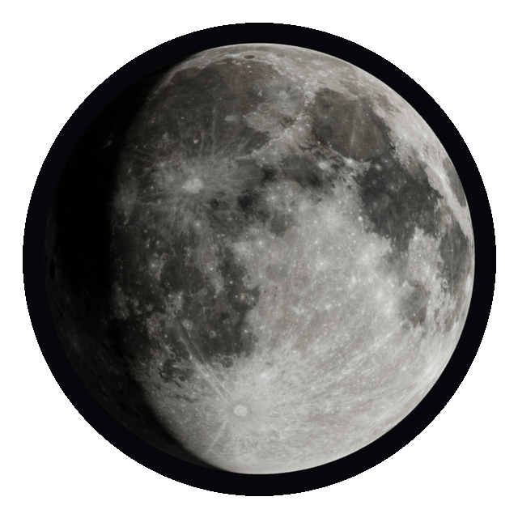
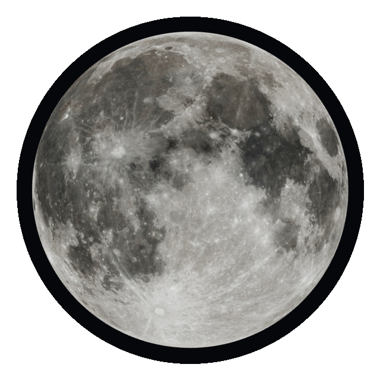
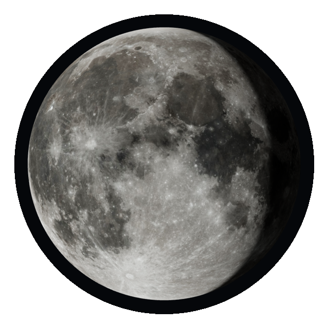
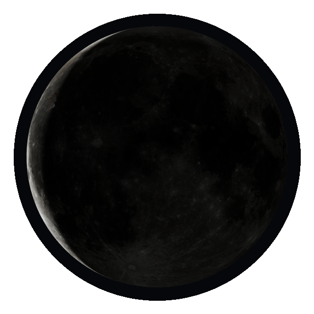
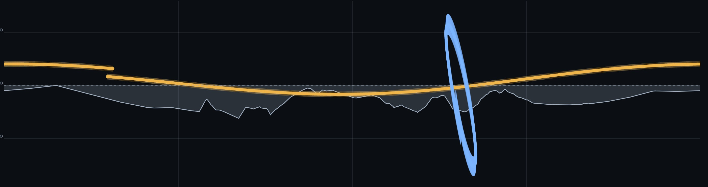

ด้วยข้อมูลจริงจากนาซา สำหรับนักเรียน ม.3



ในหนังสือเรียน · ภาพแบน 2 มิติ
หนังสือสอนระบบ 3 มิติ
ด้วยภาพแบน 2 มิติ
LUNARIS ให้นักเรียนสร้างระบบขึ้นใหม่
แล้วหมุนดูเอง
“ตอน ม.3 เรื่องนี้ไม่ได้ยาก แต่ใช้เวลานานมาก เพราะต้องนึกภาพ 3 มิติจากรูป 2 มิติในหนังสือ เราเข้าใจจริงก็ตอนที่ได้สร้างกระบวนการนั้นขึ้นเองในหัว”
คณะผู้ประดิษฐ์
ใน LUNARIS · 3 มิติ แสงจากตำแหน่งดวงอาทิตย์จริง
อุปกรณ์ชิ้นแรกของไทยที่จะไปดวงจันทร์ (CE-7 MATCH) ต้องรอ เพราะเงื่อนไขแสงอาทิตย์ที่จุดลงจอดใกล้ปล่องแชคเคิลตันไม่เป็นไปตามที่กำหนด
ที่มา: สดร. 24 ส.ค. 2569
ภูมิประเทศขั้วใต้จริง (LRO LOLA)
หลอดไฟ = ดวงอาทิตย์ · ลูกบอล = ดวงจันทร์
ศีรษะ = โลก








ภาพจาก LUNARIS คำนวณจากข้อมูลนาซา · % = ส่วนสว่าง

กล่าวอ้าง
ยืนยันด้วยหลักฐาน
แล้วทดสอบหลังเรียน
ข้างขึ้นข้างแรม ม.3: ระบบ 3 มิติ แต่เรียนจากภาพ 2 มิติ
เข้าใจผิดบ่อย: “เงาโลกทำให้เกิดข้างขึ้นข้างแรม”
ดูท้องฟ้าจริงในเวลาเรียนได้ยาก
ชุดกิจกรรมสืบเสาะ 5E 6 คาบ สำหรับ ม.3
สร้างและใช้แบบจำลอง อธิบายข้างขึ้นข้างแรม
จากโลกและจากผิวดวงจันทร์
ตัดสินใจจากข้อมูลจริง ผ่านภารกิจเลือกจุดลงจอด
ชุดกิจกรรมแผน 6 คาบ
ใบงาน 3 ชุด
แบบทดสอบ 20 ข้อ
รูบริก CER · คู่มือครู
เว็บแอปLUNARIS
ภาษาไทย · ไม่ต้องติดตั้ง
NASA SPICE · LRO LOLA
สองมุมมอง
ดูจากโลก แล้ว
ไปยืนบนดวงจันทร์
ข้อมูลจริง
ทุกตัวเลขบอกที่มา
(ว 4.2 ม.3/3)
ไม่มีคำตอบสำเร็จรูป
ทีมต้องยืนยันด้วยหลักฐาน
ตรวจเทียบ JPL Horizons ของนาซา
ประโยชน์
นักเรียน ม.3 และ
ครูวิทยาศาสตร์ ม.ต้น
ต่อยอดรายวิชา
โลกและอวกาศ ม.ปลาย
ใช้ฟรีผ่านเว็บ
ไม่ต้องซื้ออุปกรณ์
คอมพิวเตอร์ โทรศัพท์
โปรเจกเตอร์
อบรมครู
ขยายสู่โรงเรียนอื่น
ลองใช้
ได้เลย
คณะผู้ประดิษฐ์ {{INVENTORS}} · ครูที่ปรึกษา {{ADVISOR}} · โทร {{PHONE}} · อีเมล {{EMAIL}}
ข้อจำกัด: ไม่จำลองน้ำขึ้นน้ำลง · ภาพข้างขึ้นข้างแรมมองจากศูนย์กลางโลก · ยังไม่ได้ทดลองใช้กับนักเรียน | พัฒนาโดยใช้ปัญญาประดิษฐ์ช่วยเขียนโปรแกรม ภายใต้การกำกับและตรวจสอบของคณะผู้ประดิษฐ์ | ภาพทั้งหมดจับจากแอป LUNARIS · พื้นผิวดวงจันทร์: NASA SVS · ภูมิประเทศ: NASA LRO LOLA